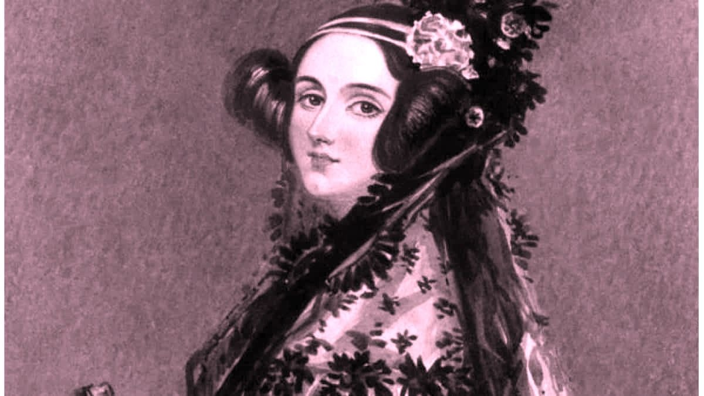
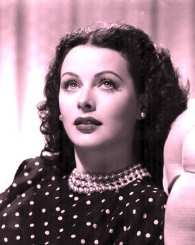
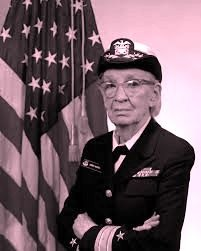
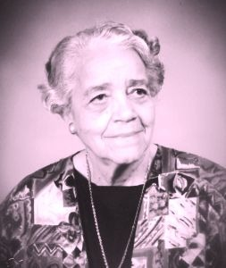

"Quanto mais estudo, mais sinto que minha mente nisso é insaciável".
-Ada Lovelace

Porque a primeira programadora do mundo foi uma mulher: Ada Lovelace

Porque quem inventou a base para wifi foi uma mulher: Hedy Lamarr

Por que Grace Hopper criou a linguagem base que usam até hoje.
Porque uma mulher desenvolveu o programa de vôo para pousar na lua: Margareth Hamilton

Quem nunca sonhou em ser programadora na NASA? A Dorothy Vaughan conseguiu há 68 anos atrás